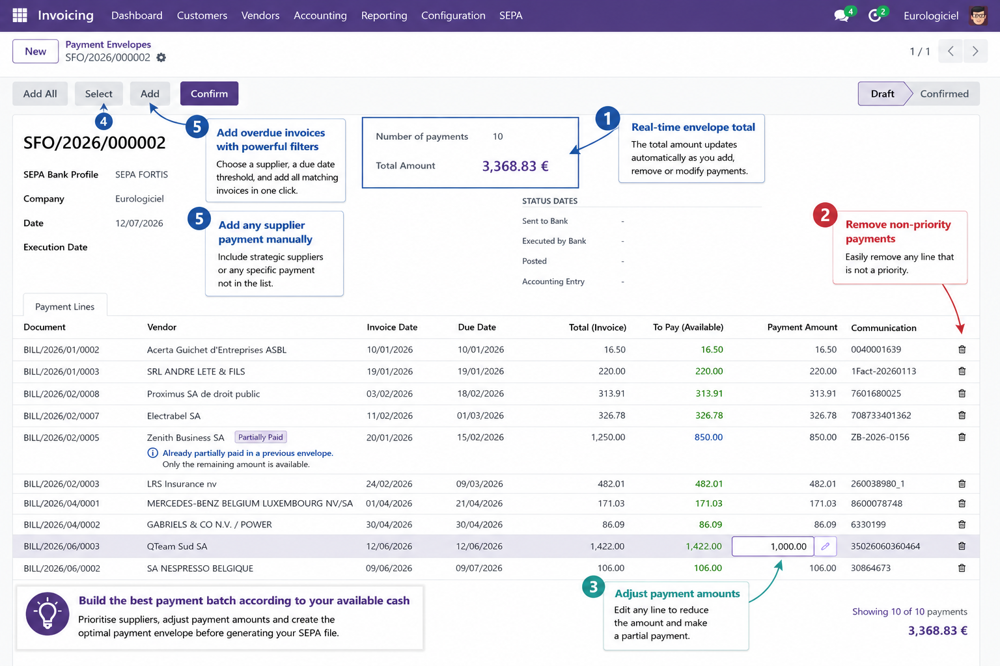

SEPA Supplier Payment Management
Prepare, prioritise and group supplier payments according to your available cash.
GICA SEPA Payment helps accountants decide what to pay, how much to pay and when to pay it, before generating a standard SEPA Credit Transfer file. The complete process remains fully integrated with standard Odoo Accounting.

Build the best payment batch according to your available cash
When available cash is limited, paying every due invoice automatically is not always the best option.
Prioritise what matters
- Prioritise strategic suppliers
- Select invoices overdue before a chosen date
- Remove non-priority payments
- Exclude disputed invoices from payment batches
Stay within your cash limit
- Adjust individual payment amounts
- Handle partial payments and remaining balances
- Monitor the envelope total in real time
- Document disputes with dedicated follow-up notes
Quick configuration
Configure one SEPA Bank Profile for each bank account and start preparing supplier payments immediately.

Banks
Link each SEPA Bank Profile to a standard Odoo bank journal.
Payments
Review invoices and prepare the amounts to be paid.
Envelopes
Build, confirm, export and post supplier payment batches.
Prepare supplier payments
Review supplier invoices before creating payment envelopes.

The preparation list gives accountants a complete overview of all invoices eligible for payment, together with outstanding balances, discounts, prepared amounts and their current preparation status.
Each invoice follows a clear workflow: Prepare, Ready, Revise or Litigation.
Complete payment review
Everything you need to review a supplier payment in one place.

General
Outstanding balances, discounts, litigation management, payment notes and prepared amounts.
Associated Documents
Automatic handling of credit notes, supplier advances and previous payments.
Envelopes
Complete traceability of previous payment envelopes and partial payments.
Complete payment workflow
From SEPA XML generation to accounting posting.

Standard SEPA XML
Generate a standard SEPA Credit Transfer file (pain.001.001.03) and keep it attached to the payment envelope.
Full workflow tracking
Record XML generation, transmission to the bank, bank execution and accounting posting.
One payment batch. One accounting entry.
Complete traceability with standard Odoo Accounting.

Single accounting entry
Create one accounting entry for the complete payment envelope.
Individual supplier lines
Keep every supplier payment individually traceable.
Standard reconciliation
Reconcile supplier invoices using Odoo's native accounting mechanism.
Mobile access
The module can be accessed through the standard Odoo web interface on mobile devices. Mobile access is especially useful for reviewing envelopes, checking workflow status and validating processing steps. Desktop use remains recommended for payment preparation because of the amount of accounting information displayed.
Requirements and compatibility
account_usability or an equivalent solution.
account module.